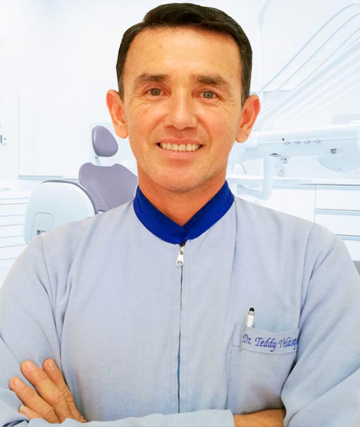
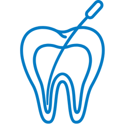
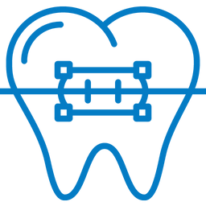
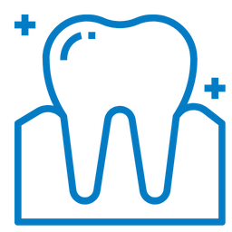
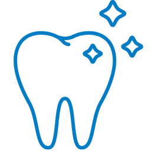

La inteligencia emocional (IE) es la capacidad de identificar, comprender, gestionar y expresar nuestras emociones de manera adecuada, así como reconocer e influir en las emociones de los demás. Este concepto fue popularizado por el psicólogo Daniel Goleman, aunque tiene raíces en investigaciones previas realizadas por Peter Salovey y John Mayer.
Más de 10 años de experiencia y cientos de sonrisas alrededor de la ciudad de Huánuco nos respaldan como una de las mejores Clínicas Dentales de la Región. ¡Compruébalo tu mismo!
ACERCA DE NOSOTROS
Cuidamos su salud dental
Dental Express nació con un propósito claro: democratizar la
odontología. Creemos firmemente que el acceso a servicios
dentales de calidad no debe ser un lujo, sino un derecho para
todos. Por eso, nos hemos dedicado a ofrecer tratamientos
dentales a precios económicos, sin comprometer la excelencia.
Misión
Nuestra misión es proporcionar tratamientos dentales excepcionales en un entorno acogedor y profesional, asegurando que cada visita sea conveniente, cómoda y satisfactoria. Nos esforzamos por hacer que el cuidado dental sea una experiencia positiva y libre de estrés para todos nuestros pacientes.
Visión
Ser la clínica dental líder en ofrecer servicios de alta calidad a precios accesibles, transformando la experiencia de la odontología en la región. Nos esforzamos por ser reconocidos como la primera opción para el cuidado dental, donde cada paciente puede obtener una sonrisa saludable y hermosa sin preocupaciones económicas.
Nuestros valores
1. Accesibilidad
2. Integridad
3. Responsabilidad

¿Por qué las empresas necesitan este tipo de inteligencia?
Hoy en día son muchas las corporaciones que invierten grandes sumas de dinero en formar a sus empleados en Inteligencia Emocional. La razón de esta apuesta estriba en que las empresas se han dado cuenta de que una de las claves del éxito comercial y de la venta de sus productos radica en el grado en que sus trabajadores son capaces de reconocer y controlar sus emociones, así como las de sus clientes.
Es casi impensable concebir un comercial de ventas que carezca de habilidades en el trato con los clientes, un empresario sin motivación para la dirección de su compañía o un negociador que no sepa capaz de controlar sus impulsos y emociones. Todo el conocimiento técnico basado en la mejor relación entre estudios académicos y experiencia no será ninguna garantía para estas personas, porque tarde o temprano malograrán operaciones económicas por un deficiente conocimiento de sus emociones.
INTELIGENCIA EMOCIONAL
ELEMENTOS

Estado de Ánimo General
Tratamiento sin dolor, rápido y seguro de las raíces del diente en el que se procede a la extracción total del nervio dental.

Intrapersonal
¿Cansado de tener los dientes mal posicionados? Especialidad de la odontología encargada de corregir defectos de la posición del diente.
Adaptabilidad
Especialidad dedicada a devolver la función masticatoria, restaurar y/o devolver la pérdida de dientes a través del uso de prótesis fija, removiblee e implantes.

Manejo de Estrés
Si estás cansado del mal aliento, sangrado e inflamación de tus encías, tenemos un tratamiento especializado para solucionarlo.

Interpersonal
Recupera tu sonrisa con nuestros novedosos tratamientos: Blanqueamiento LED, Carillas, Coronas libres de metal y más.
Empatia
Enfocados a la prevención gracias al cuidado oral mediante diversas técnicas de motivación y responsabilidad para el niño.
Alira es una solución discreta y cómoda para corregir la posición de los dientes sin necesidad de brackets que suelen ser un poco incomodos. Estos alineadores transparentes y removibles son prácticamente imperceptibles, permitiendo una sonrisa estética durante el tratamiento.
Son una opción popular para corregir la posición de los dientes de manera discreta y estética. Están fabricados con materiales transparentes o del color de los dientes, lo que los hace menos visibles que los brackets tradicionales. Obtén una sonrisa alineada y atractiva sin comprometer tu apariencia.
Son una opción duradera y eficaz para corregir la posición de los dientes. Están fabricados con acero inoxidable de alta calidad y son conocidos por su resistencia y capacidad para tratar una amplia gama de problemas dentales. También son una elección popular debido a su eficacia y asequibilidad.
somos abiertos y acogedores con nuestros pacientes